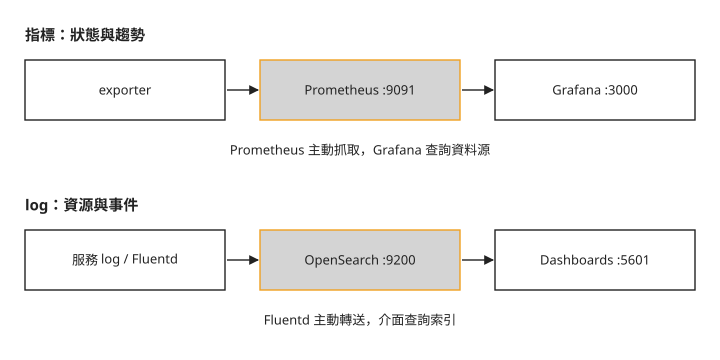
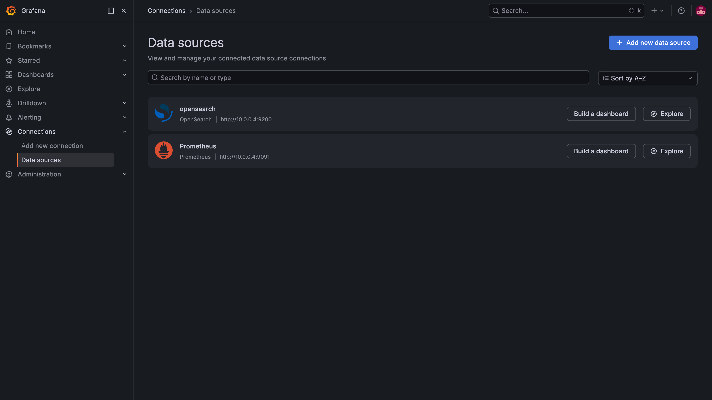
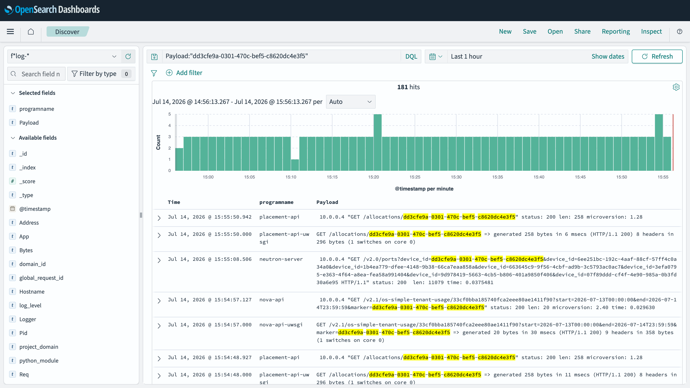

Day 21：集中查詢服務紀錄與監控指標¶
一台 VM 建立失敗，你拿著 Day 19 找到的 UUID，分別到 Nova、Placement、Neutron 的紀錄搜尋。當服務分散到多台主機，逐台登入就很費時。Day 20 沿著 OVN 網路規則追查封包，本章接著集中搜尋服務紀錄與監控指標。另一個問題是：還沒有人回報錯誤，如何發現磁碟快滿了，或某個服務已經停止回報？本章建立兩條資料收集路徑，讓你判斷何時看指標、何時查事件紀錄。
指標與 log 各自回答什麼¶
指標（metric） 是隨時間取樣的數值，例如可用記憶體、佇列長度、API 錯誤次數。Prometheus 定期向 exporter 抓取指標；exporter 是把服務或主機狀態轉成 Prometheus 格式的程式。Grafana 再把數值畫成趨勢圖。
log 記錄個別事件，例如某台 VM 的資源配置成功或失敗。Fluentd 收集服務紀錄，送到 OpenSearch 儲存與搜尋；OpenSearch Dashboards 或 Grafana 提供查詢介面。下圖將兩條路徑分開：

圖中的連線方向表示資料流。Prometheus 主動抓取 exporter，Fluentd 則主動轉送 log。看到圖表空白時，先確認上游有資料，再確認介面能連到資料源。
步驟 1：啟用收集服務¶
以下沿用單機 Kolla 環境與管理員 openrc。先確認 /var/lib/docker 有足夠空間；OpenSearch 的索引會持續占用磁碟。設定 enable_central_logging 後，Kolla 會部署 OpenSearch 與 Dashboards，並設定 Fluentd：
sudo tee -a /etc/kolla/globals.yml << 'EOF'
enable_prometheus: "yes"
enable_grafana: "yes"
enable_central_logging: "yes"
EOF
source ~/kolla-venv/bin/activate
kolla-ansible deploy -i ~/all-in-one --tags prometheus,grafana,common,opensearch
common tag 涵蓋 Fluentd 的設定。部署結束的 failed=0 只代表部署工作成功；接下來還要確認 target 與索引實際有資料。
步驟 2：確認 Prometheus 能抓取指標¶
Prometheus 把每個抓取對象稱為 target。本章 Kolla 預設使用 9091 與 basic auth，帳號是 admin，密碼取自 passwords.yml。10.0.0.4 要對應你的單機管理位址：
PW=$(sudo grep '^prometheus_password:' /etc/kolla/passwords.yml | awk '{print $2}')
curl -s -u admin:$PW http://10.0.0.4:9091/api/v1/targets \
| python3 -c "import sys,json,collections; \
t=json.load(sys.stdin)['data']['activeTargets']; \
print(collections.Counter(x['health'] for x in t))"
up 表示最近一次抓取成功；down 表示抓取失敗，還不能直接斷定被監控的服務停止。這份紀錄裡 RabbitMQ 的 target 尚未上線，處理範圍見疑難排解：RabbitMQ target 持續 down。不要把「大部分 up」當作全部監控已完成。
cAdvisor 是容器資源指標收集器。若它的容器 prometheus_cadvisor 持續重啟並回報 inotify_init: too many open files，再依疑難排解調整主機限制。
步驟 3：確認 log 已匯入 OpenSearch¶
OpenSearch 將資料放在 索引（index） 中；Kolla 預設的 log 索引名稱以 flog- 開頭。以下先查叢集健康，再確認 log 索引存在：
curl -s http://10.0.0.4:9200/_cluster/health?pretty | grep status
curl -s http://10.0.0.4:9200/_cat/indices | grep flog
yellow 表示 primary shard（主要分片）可用，但有 replica shard（副本分片）尚未配置；在只有一個節點、仍要求副本時可以出現。它不是所有異常都能忽略的訊號。這份節錄同時顯示索引已有文件；之後應持續留意文件是否增加與資料是否夠新。
若從本機瀏覽器連線，先另開一個本機終端機，沿用 Day 13 的 SSH 金鑰與 VM 公網 IP，替換下方的角括號內容；兩處 10.0.0.4 都要換成你的 VM 管理私有 IP。Kolla-Ansible 2025.1 官方設定中，Grafana 與 OpenSearch Dashboards 的預設埠分別是 3000、5601。
以下依 OpenSSH 官方手冊建立 Grafana 與 OpenSearch Dashboards 的本機 SSH 轉送（依官方文件補上，本課沒有實跑）：
ssh -N -T -o ExitOnForwardFailure=yes \
-i "<SSH金鑰絕對路徑>" \
-L localhost:3000:10.0.0.4:3000 \
-L localhost:5601:10.0.0.4:5601 \
"azureuser@<VM公網IP>"
保持這個終端機開啟，瀏覽器開啟 http://localhost:3000 使用 Grafana；步驟 5 的 OpenSearch Dashboards 則開啟 http://localhost:5601，登入方式見下文與 2025.1 集中式 log 指南。若本機埠已被舊的 SSH 轉送占用，先在舊終端機按 Ctrl+C 結束該轉送，再執行上面的指令；本章練習結束後，也以 Ctrl+C 關閉這條連線。
Grafana 使用 3000 埠。從你已建立的 SSH tunnel 或可達管理網路開啟它，使用 admin 與 passwords.yml 裡的 grafana_admin_password 登入。資料源頁可以確認 Prometheus 與 OpenSearch 的連線設定：

看到資料源名稱不等於所有指標都存在。先從主機磁碟與記憶體、服務存活狀態，再到 API 錯誤率與佇列長度；每項都要對照相應 exporter 是否成功抓取。本章未補做各 dashboard 與告警規則的驗證。
步驟 4：更新 Skyline 的監控設定¶
Day 13 部署 Skyline 時，Prometheus 還沒有啟用。現在要重新產生 Skyline 設定，讓它取得 Prometheus endpoint 與專用認證資料。先確認 Day 15 的 ceph_rgw_swift_compatibility: "false" 仍寫在 globals.yml，避免 RGW 路徑在這次重新產生設定時不一致。
部署成功後，檢查 Skyline 的監控頁是否能載入資料。
步驟 5：用 UUID 跨服務搜尋¶
接著建立一台測試 VM，取得 UUID，再搜尋 OpenSearch 的 Payload 欄位，也就是 log 訊息本文。以下假設 day17-net、cirros、m1.tiny 仍存在；同名 obs-vm 若已存在，先確認它是不是先前練習留下的資源，避免重複建立。
# 開一台 VM,拿它的 UUID
VM=$(openstack server create obs-vm --flavor m1.tiny --image cirros --network day17-net -f value -c id)
sleep 20
# 用 UUID 在所有服務的 log 裡一次搜(Day 19 的技巧 × 集中式)
curl -s http://10.0.0.4:9200/flog-*/_search -H 'Content-Type: application/json' \
-d "{\"query\":{\"match_phrase\":{\"Payload\":\"$VM\"}},\"size\":5}" \
| python3 -c "import sys,json; \
d=json.load(sys.stdin); \
print('命中', d['hits']['total']['value'], '筆'); \
[print(' ', h['_source']['Payload'][:80]) for h in d['hits']['hits']]"
這段範例等待 20 秒讓紀錄有時間送入索引，並非 VM 完成或 log 匯入的保證。若沒有命中，先確認 VM UUID、索引與收集延遲。本課的搜尋結果節錄如下：
命中 19 筆
[instance: ee9d0bd4-…] Claim successful on node openstack-lab
10.0.0.4 "GET /allocations/ee9d0bd4-…" status: 200
10.0.0.4 "PUT /allocations/ee9d0bd4-…" status: 204
命中的紀錄同時包含 Nova 的 instance 訊息與 Placement 的 allocations API。這說明同一個 UUID 能連結不同服務的事件，但這裡只要求傳回五筆文件，不能視為 VM 完整生命週期的全部紀錄。對單次請求，也可使用 Day 19 的 request-id 縮小範圍。
OpenSearch Dashboards 使用 5601 埠，預設帳號 opensearch，密碼為 opensearch_dashboards_password。首次登入先建立 index pattern flog-*，時間欄位選 @timestamp，再到 Discover 選對時間範圍，搜尋 UUID：

除了搜尋字串，也要看時間範圍與 programname。查不到時，先分辨是該服務沒有記錄這個 UUID，還是 Fluentd 尚未送入。練習結束以 openstack server delete obs-vm 刪除測試 VM。
疑難排解¶
cAdvisor 持續重啟並回報 inotify 限制¶
inotify 是 Linux 監看檔案變化的機制。當 cAdvisor 無法再建立監看實例，會出現 inotify_init: too many open files。先確認錯誤訊息，再提高對應限制並重啟該容器：
echo 'fs.inotify.max_user_instances=1024' | sudo tee /etc/sysctl.d/99-inotify.conf
echo 'fs.inotify.max_user_watches=524288' | sudo tee -a /etc/sysctl.d/99-inotify.conf
sudo sysctl -p /etc/sysctl.d/99-inotify.conf
sudo docker restart prometheus_cadvisor
這是針對 inotify 限制的修法；不要只因容器數增加就認定所有重啟都由它造成。
RabbitMQ target 持續 down¶
本章尚未完成 RabbitMQ metrics 接線。Kolla 透過 RabbitMQ role 管理 rabbitmq_prometheus plugin；只部署 Prometheus 的 tag 不代表既有 RabbitMQ 容器已套用 plugin 設定。本課尚未驗證重新套用後 target 恢復，因此這裡仍是未完成項目。可沿用 Day 19 的 RabbitMQ 管理工具檢查佇列，但不能宣稱 Prometheus 已取得這些佇列指標。
想一想¶
- 某個 target 是 down，但 VM 仍可建立，你會先檢查被監控服務，還是抓取 endpoint 與認證？需要什麼證據區分？
- 搜尋 UUID 沒有結果，為什麼不能立刻斷定 Nova 沒處理這台 VM？
- 同一台 VM 的紀錄有數十筆，只傳回五筆的搜尋結果能證明哪些事，又不能證明哪些事？
小結¶
Prometheus 用數值指出狀態與趨勢，OpenSearch 用事件紀錄追查資源經過的服務。部署之後要分別確認抓取、匯入與查詢三件事；資料源出現在介面上只是其中一步。集中查詢減少逐台找檔案的工作，對紀錄內容與缺漏的判讀仍需要 Day 19 的服務分工知識。
延伸閱讀¶
想再深入，可以從這幾份開始：
- Kolla-Ansible 2025.1 Prometheus 指南：查看 exporter、認證與抓取設定。
- Kolla-Ansible 2025.1 集中式 log 指南：對照索引、保留期限、Discover 與 Fluentd 設定。
- Kolla-Ansible 2025.1 Grafana 指南：查登入與資料源設定。
- Prometheus 概念導覽：理解時間序列與抓取模型。
下一步¶
Day 22 使用這些觀測資料，檢查更新與資料庫還原前後的狀態。